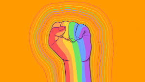

Cultura
Diversidade cultural é o conjunto de culturas que convivem em um mesmo território, e que se manifestam em diversos aspectos, como: Tradições, Crenças, Cerimônias, Ritos, Idioma, Linguagem, Comportamentos, Hábitos, Valores, Culinária. A diversidade cultural é importante porque nos ajuda a reconhecer e respeitar as diferenças entre as pessoas, e a promover a inclusão e a igualdade de oportunidades. O Brasil é um país com uma grande diversidade cultural, devido à pluralidade de colonizações e influências que sofreu. As diferenças culturais são bastante visíveis entre as diferentes regiões do país, com destaque para as tradições indígenas e africanas nas regiões norte e nordeste, e os costumes de origem europeia nas regiões sudeste e sul.
.jpeg)
Raça
Diversidade racial é a união de pessoas de diferentes origens, histórias, idiomas, religiões e culturas. É uma realidade do Brasil, que tem uma das populações mais miscigenadas do mundo. A diversidade racial é importante para o desenvolvimento da sociedade, pois todos os seres humanos têm os mesmos direitos e deveres. No entanto, grupos de pessoas com diferentes identidades sofrem discriminação e segregação, e lutam para serem aceitos como cidadãos plenos. O termo raça surgiu para classificar plantas e animais, mas foi posteriormente aplicado aos seres humanos. Ele leva em conta características genéticas e fenotípicas, como a cor da pele, a textura do cabelo, as características faciais ou o formato do corpo. No entanto, a raça humana é uma construção social, e não um termo fixo. No Censo 2022, o IBGE perguntou como a pessoa se via, e ela quem dizia qual era a própria raça. As opções eram branca, preta, parda, indígena ou amarela.

Gênero
Diversidade de gênero é a representação justa de pessoas de diferentes gêneros, independentemente do sexo biológico. Ela abrange a visibilidade e o respeito a todas as identidades de gênero, que podem ser divergentes do sexo biológico. A diversidade de gênero inclui: Cisgênero: Pessoa que se identifica com o seu sexo biológico Transgênero: Pessoa que se identifica com um gênero diferente do seu sexo biológico Não binário: Pessoa que transita entre masculino e feminino A diversidade de gênero é importante porque: Empresas que se preocupam com a diversidade de gênero têm melhores condições de trabalho, maior retenção de talentos e equipes mais criativas. A diversidade de gênero permite agregar diferentes vivências dentro de um mesmo time. A diversidade de gênero pode ajudar a combater a desigualdade. A diversidade sexual é um conceito amplo que engloba a diversidade de gênero e a orientação sexual.
